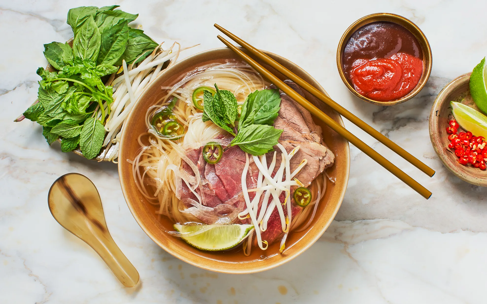

Beef Pho

Description
South Vietnamese-style pho. A comforting, richly-seasoned beef broth is ladled over rice noodles and thinly sliced beef. Add hot sauce and plum sauce to taste and top with cilantro, basil, lime juice and bean sprouts.
Ingredients
- 5 pounds beef knuckle, with meat
- 2 pounds beef oxtail
- 1 white (daikon) radish, sliced
- 2 onions, chopped
- 2 ounces whole star anise pods
- ½ cinnamon stick
- 2 whole cloves
- 1 teaspoon black peppercorns
- 1 slice fresh ginger root
- 1 tablespoon white sugar
- 1 tablespoon salt
- 1 tablespoon fish sauce
- 1 ½ pounds dried flat rice noodles
- ½ pound frozen beef sirloin
Toppings
- Sriracha hot pepper sauce
- Hoisin sauce
- thinly sliced onion
- chopped fresh cilantro
- bean sprouts (mung beans)
- sweet Thai basil
- thinly sliced green onion
- limes, quartered
Steps
- Place the beef knuckle in a very large (9 quart or more) pot. Season with salt, and fill pot with 2 gallons of water. Bring to a boil, and cook for about 2 hours.
- Skim fat from the surface of the soup, and add the oxtail, radish and onions. Tie the anise pods, cinnamon stick, cloves, peppercorns and ginger in a cheesecloth or place in a spice bag; add to the soup. Stir in sugar, salt and fish sauce. Simmer over medium-low heat for at least 4 more hours (the longer, the better). At the end of cooking, taste, and add salt as needed. Strain broth, and return to the pot to keep at a simmer. Discard spices and bones. Reserve meat from the beef knuckle for other uses if desired.
- Bring a large pot of lightly salted water to a boil. Soak the rice noodles in water for about 20 minutes, then cook in boiling water until soft, but not mushy, about 5 minutes. Slice the frozen beef paper thin. The meat must be thin enough to cook instantly.
- Place some noodles into each bowl, and top with a few raw beef slices. Ladle boiling broth over the beef and noodles in the bowl. Serve with hoisin sauce and Sriracha sauce on the side. Set onion, cilantro, bean sprouts, basil, green onions, and lime out at the table for individuals to add toppings to their liking.
Return to maon page